Patient encounters are handled primarily by a clinic's providers.
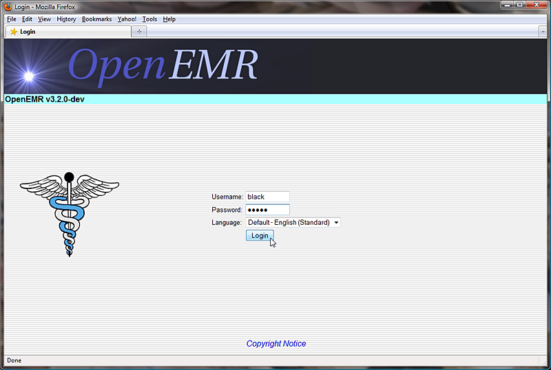Logging in as a provider presents you with the Calendar page showing only that provider's schedule by default. To view another provider's schedule, select the desired user from the list to the left of the calendar.
The bottom window also shows any notes left for that provider about their patients.
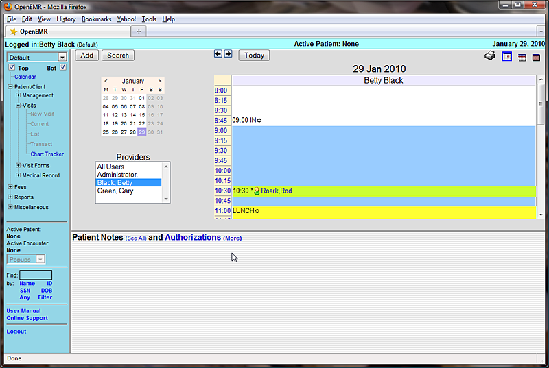The Calendar shows the appointments scheduled for that day. Providers can see the status of any given appointment, indicated by the symbol show between the appointment time and the patient's name. The “@” symbol, for example, indicates that the patient has arrived at the clinic and is ready to begin their appointment.
To begin the encounter, click on the patients name in the Appointment Calendar. This brings you to the patient's Demographics page, as well as the Patient Summary page which list any notes specific to that patient, and any medical issues, medications, etc. for that patient.
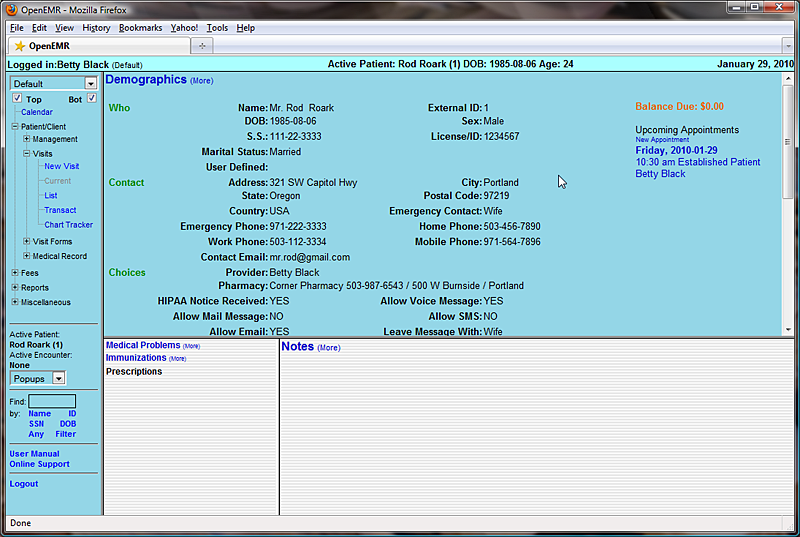Select 'Patient/Client – Medical Record - History' from the navigation menu to view a summary of the patients Medical History and Lifestyle information. Click 'Patient History / Lifestyle (more)' to enter any information that may be incomplete.
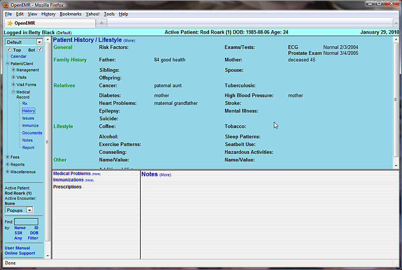When you're done, select 'Patient/Client – Visits – List'. This displays a list of all encounters that have been entered for this patient. For new patients, there may be no encounters listed.
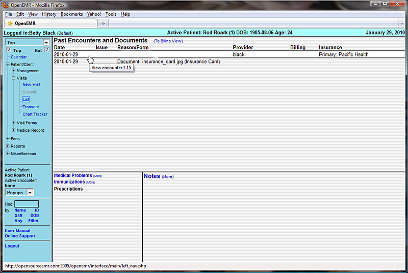By default, OpenEMR is set to generate an empty Encounter when a patient's status has been set to “Arrived (@)”. To open this encounter and begin entering data, click on the new entry in the Encounters list, then click on 'Patient Encounter' next to the provider's name.
If your clinic's version of OpenEMR is configured differently, you can begin a New Encounter manually by selecting 'New Visit' from the navigation list on the left. Both methods will bring you to the New Encounter Form.
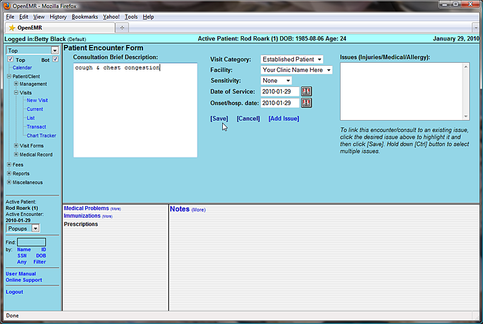Here you can enter a brief description of the encounter and the date of service. Encounters for new patients will not have any Issues or Diagnoses associated with them at this time, so click 'Save' to continue with the encounter.
This will bring you back to the summary page for This Encounter. Displayed is a list of all the forms associated with this encounter. You may click on the name of any of these forms to edit its contents.
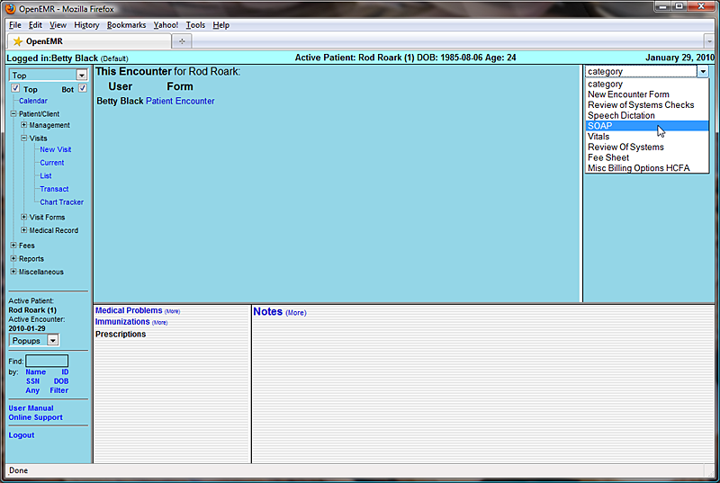To the right is a drop-down list of forms that can be added to the encounter. OpenEMR comes configured with several common encounter forms by default, but your clinic may have their own customized encounter forms as well.
Select 'SOAP' from the drop-down list to add it to the encounter.
The SOAP form will contain a subjective & objective record of the patient’s vital information, as well as any notes on the assessment of the patient's health and suggested treatment plans.
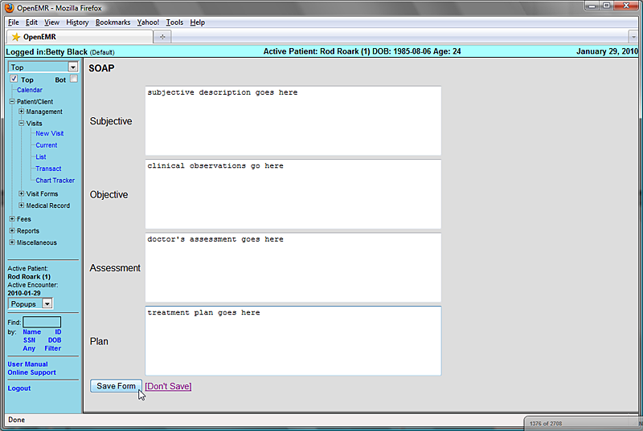Enter the appropriate information and click 'Save Form' to return to the Encounter summary page.
You'll see that the SOAP form has been added to the list of forms for this encounter. Also shown is a summary of its contents.
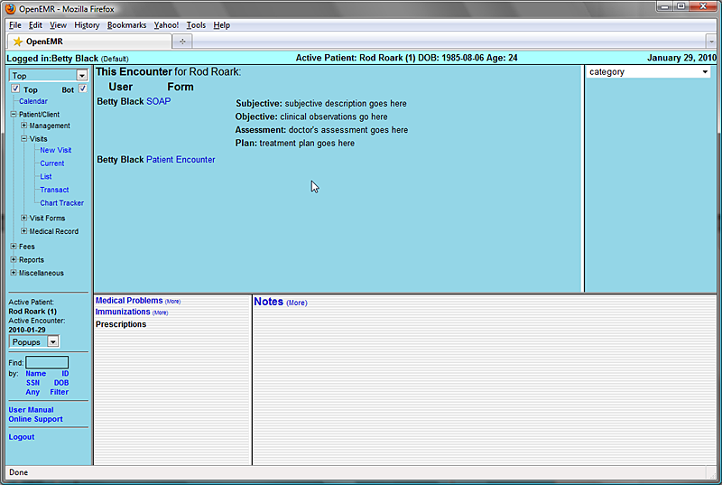Next select the 'Fee Sheet' from the drop-down list. The Fee Sheet is different from most other forms in that it enters and modifies billing information that is stored elsewhere in the system; it is not really an encounter form, and when used it will not appear in the encounter's list of forms.

The Fee Sheet includes several drop-down lists of the most commonly used billing codes. It can and should be customized so that it's most suitably adapted to your practice;
Included is a search feature, where you can search for and select from the thousands of billing codes in the database. And below that is a list of all the billing codes, along with their charges and other related information, that have been selected for this encounter.
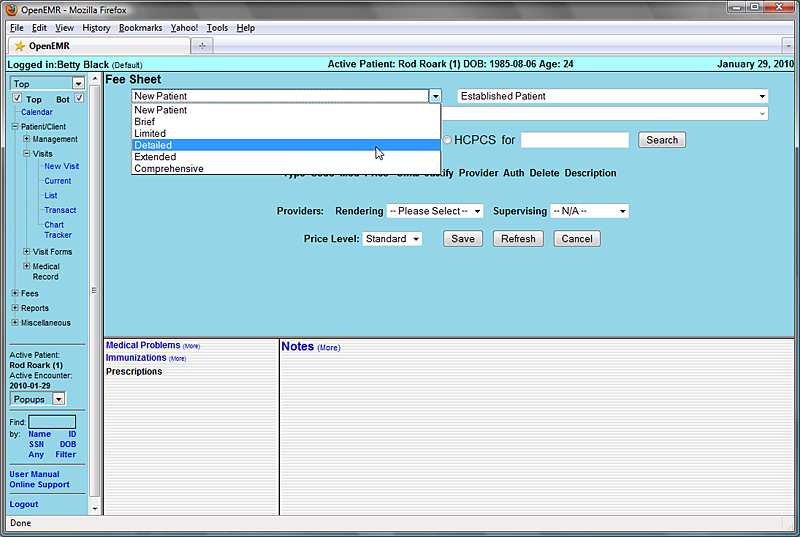For example, selecting 'Detailed' from the “New Patient” drop-down adds the associated CPT code to the list.
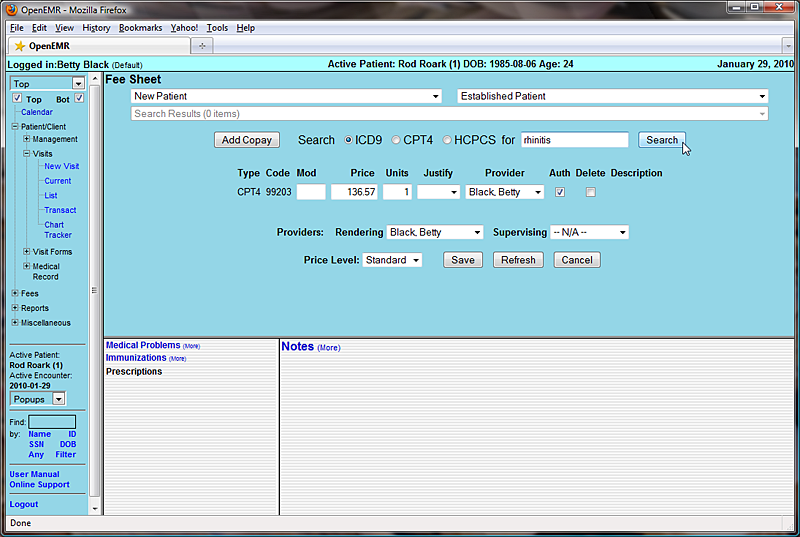Look for an appropriate billing code by entering a search term in the box to the left of the 'Search' button. Make sure the correct code type is selected and click 'Search'.
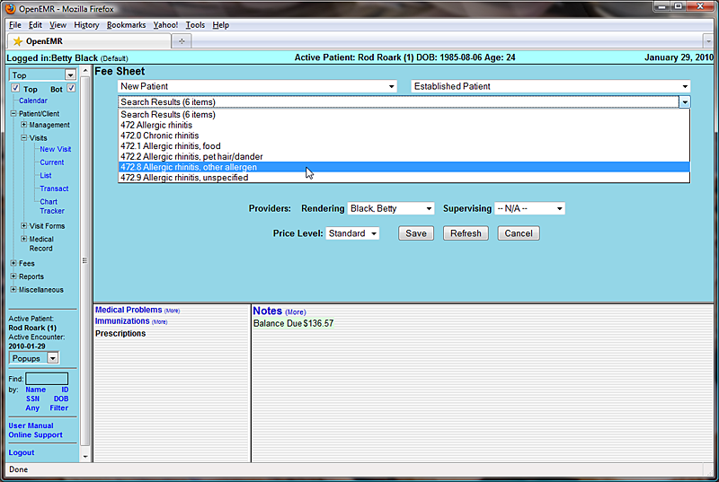A drop-down list will then be populated with any billing codes that match your search parameters. Selecting the desired code from the list will add it to the list of codes for this encounter.
The Fee Sheet also allows you to justify the selected codes for billing purposes. Justification is the association of ICD9 codes with procedure codes. Insurance companies require this for billing, in order to "justify" paying for procedures.
To do this, click the drop-down menu under 'Justify' for the desired CPT code. Select the appropriate ICD9 code from the list and click 'Save'.
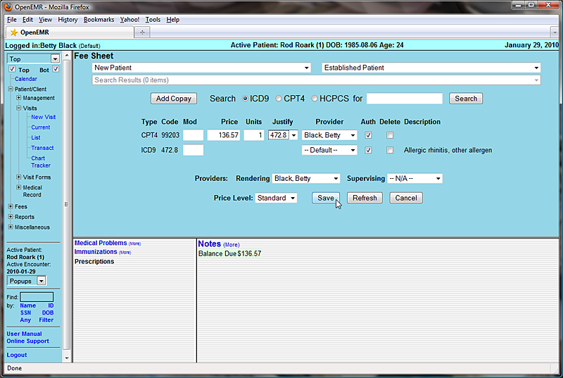To see the Feet Sheet has been associated with this encounter, click 'Encounters' in the navigation menu to go to the list of encounters for this patient. You can see that the CPT & ICD9 codes are listed next to the new encounter, as well as the SOAP form that was added earlier.
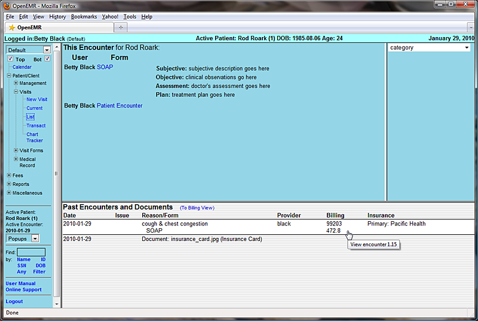To prescribe medication for this patient select 'Patient/Client – Medical Record - Rx' from the navigation menu on the left and click 'Add Prescription'.
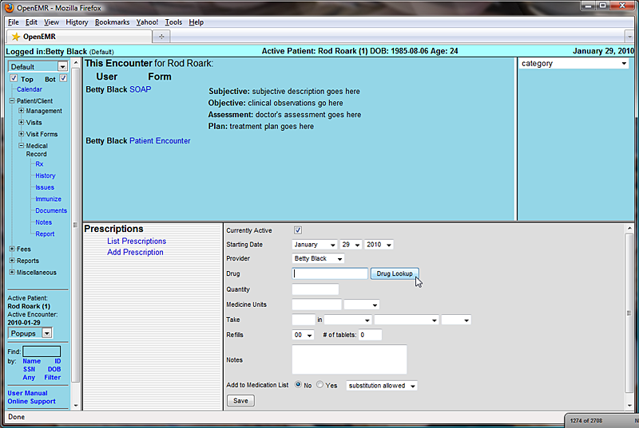This presents you with a form for entering prescription data, including dosage, refills, and whether or not generic over-the-counter substitutions are allowed for this patient.
The Prescription form includes a search function for looking up a particular type of medication. To use this function click 'Drug Lookup'. A box will pop up into which a search term may be entered.
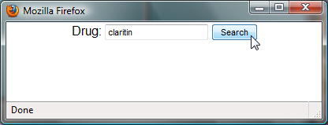Clicking 'Search' displays a drop-down list of possible medications generated by connecting to the web site www.rxlist.com.
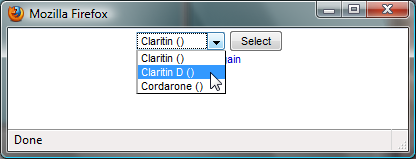Select the desired medication to return to the Prescription form. The selected medication has now been filled in for you. Also, clicking 'Yes' next to “Add to Medication List” will allow the prescription to be included in the Issues list as a Medication.
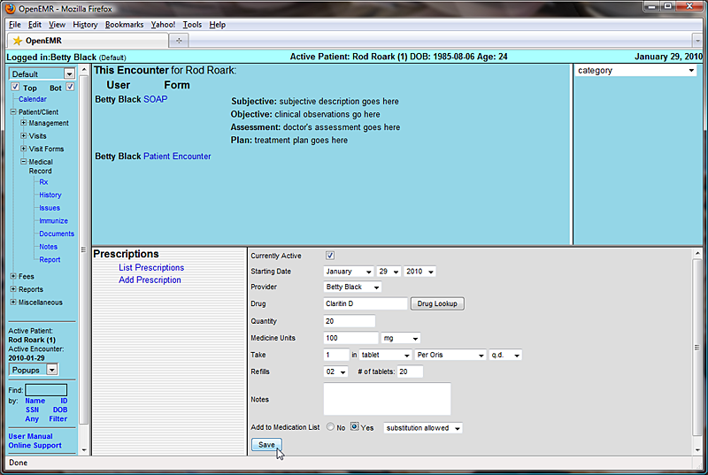Enter the correct data to complete the form and click 'Save'. You are then presented with a form for generating a PDF of the prescription information. It may be printed or sent by email or fax. "Auto Send" will use whichever default method was selected when you set up the pharmacy.
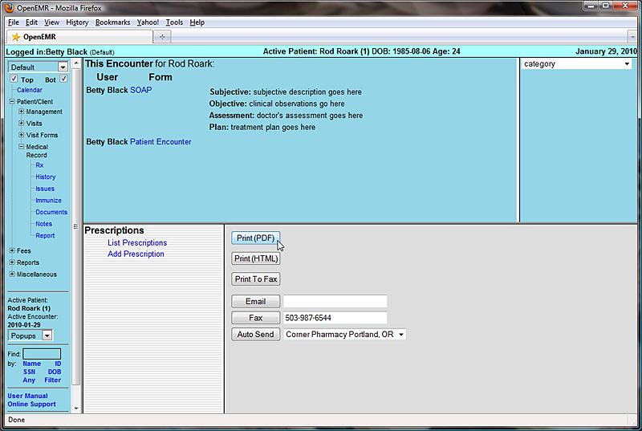Clicking 'Print (PDF)' will generate the following PDF document to be saved or printed as necessary. The default template for this form may also be customized to your clinic's own specifications.